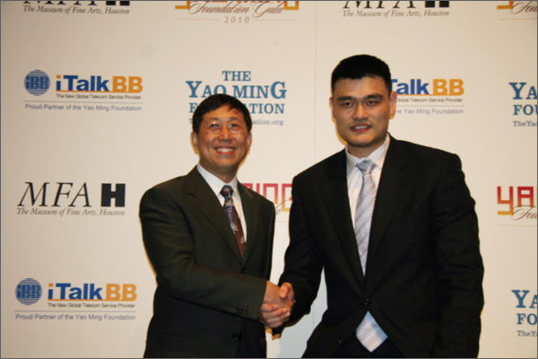
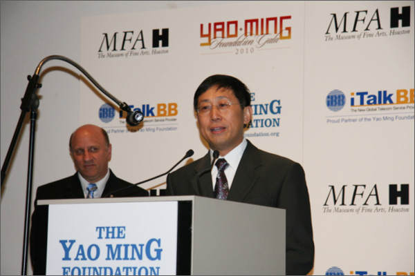
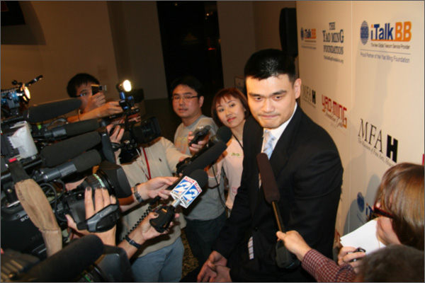

共同成就，我們在一起 - iTalkBB攜手姚明及其基金會共同創建美好明天!
(美國弗吉尼亞州維也納訊)
得克薩斯州休斯頓11月17日訊 - iTalkBB新電信攜手姚明及其基金會於11月17日在休斯頓藝術博物館隆重舉行記者發布會，宣布iTalkBB新電信正式成為姚明基金會2010年慈善晚宴冠名贊助。著名NBA球星姚明和iTalk Global CEO趙捷等出席了新聞發布會。 2010年姚明基金會慈善晚宴將於1月30日在休斯敦藝術博物館舉行。帶傷出席新聞發布會的姚明表示，姚明基金會將進一步致力於服務休斯頓小區工作和兒童教育等，基金會最近的捐款將有一部分用於建設遭受颱風襲擊的得克薩斯灣區的運動球場等。
姚明表示他很高興此次能與iTalkBB合作，進一步推廣兒童教育及中華文化。iTalk Global CEO趙捷表示：iTalkBB新電信與姚明基金會的合作秉承了iTalkBB的一貫宗旨--"為海外華人提供更好的生活！"鼓勵和推廣華裔兒童教育，一向是iTalkBB新電信回饋華人小區的重點。曾經在2008年，iTalkBB 新家庭電話就特別 與全美中文學校聯合舉辦了"中文作文比賽"，並全額贊助了8位獲獎的華裔學生參加iTalkBB"尋根之旅"。iTalkBB新電信將贊助姚明基金會的2010年年度慈善晚宴，希望與姚明及其基金會共同努力，為華裔社會做出更多的貢獻。
新聞發布會結束後，iTalkBB CEO趙捷先生與姚明親切握手，愉快交流。作為姚明 基金會慈善晚宴的冠名贊助及合作夥伴，iTalkBB基於雙方共同的理念，強強連手，將為海外華人小區提供更直接，更有效的服務，尤其是對海外華裔兒童而言，將會有更為深遠的影響。 "共同成就，我們在一起"iTalkBB攜手姚明及其基金會為海外華人共同創造美好明天。
  有關活動詳情，歡迎撥打24小時中文免費服務熱線1－877－482－5522，或登錄網站www.iTalkBB.com。
關於 iTalkBB：
iTalkBB新電信是享譽全美的優秀通訊品牌，是國際電訊行業的領導和先驅。其以頂級全球網絡和前沿技術為依託，以最具競爭力的價格為客戶提供高質、清晰的本 地、國內及國際長途電話服務，以及高清中文電視直播、回播與點播服務。其電話業務能完全取代傳統家庭電話，並享受多重免費提供的附加功能如來電等待、三方通 話、來電顯示、呼叫轉移等。另有獨一無二的功能——中國大陸、台灣、香港、南韓當地號碼，當地親友只要撥打此號碼，就能接通到在美國的親友，而無需支付國際 長途費用 。iTalkBB的高清中文電視服務，自問世以來便受到了廣泛的好評和歡迎。超過五十個熱門頻道支持實時直播與48小時回看，海量最新電影電視劇綜藝節目免 費無限點播，讓用戶以最低價格盡享華語娛樂。iTalkBB新電信將不斷努力，與您共同成就更美好的生活。iTalkBB設有24小時中英文的客戶服務熱線: 1-877-482- 5522和官方網站www.iTalkBB.com，一年365天提供不間斷的服務與更多信息的查詢。